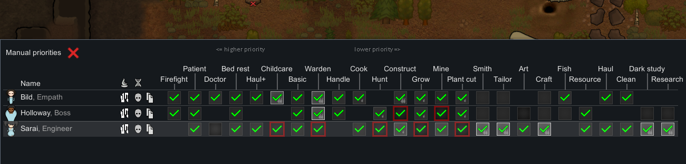
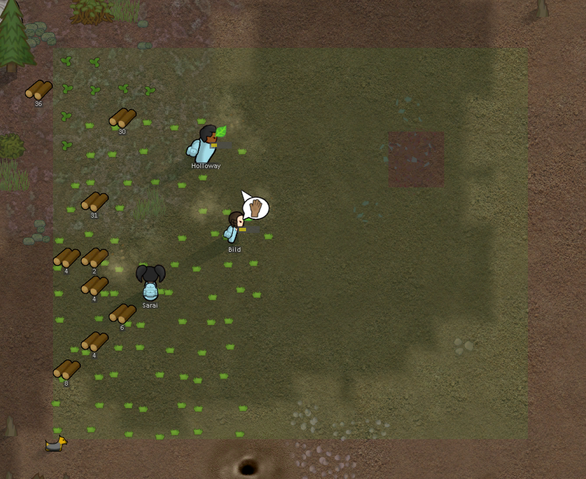
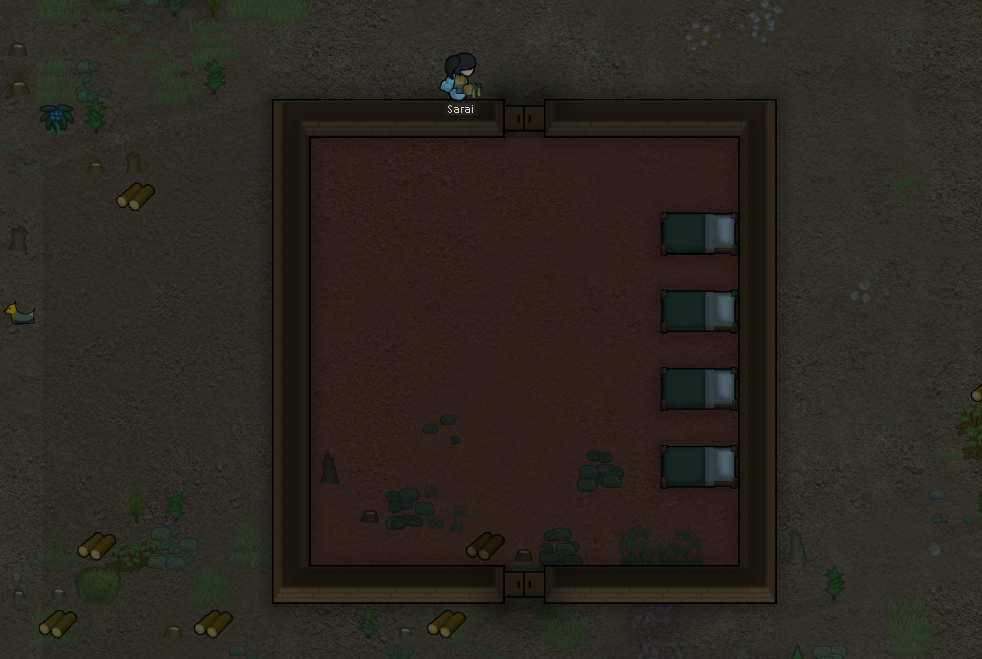
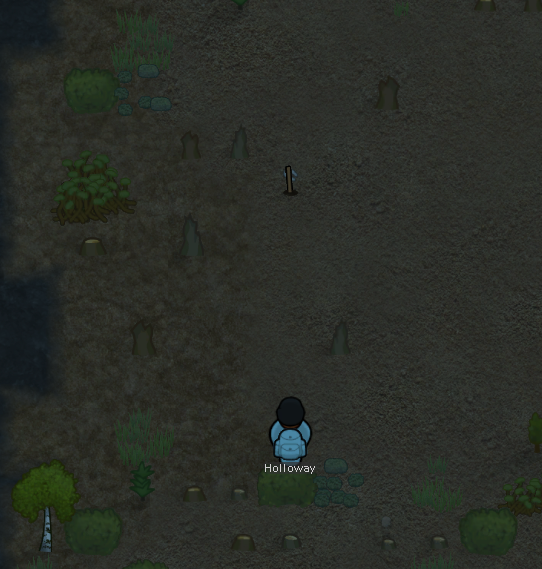
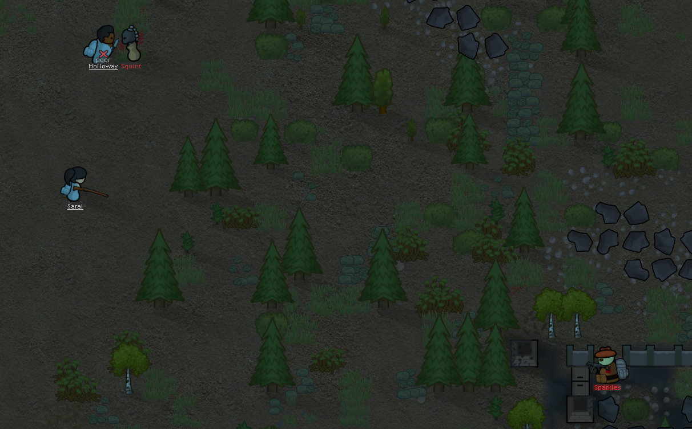

Once you've set up your colony, the early game is all about survival and establishing a stable foundation. Here are some key tips to help you navigate the early stages of RimWorld:

Prioritize tasks to pawn that have the right skills for the job like a pawn with double passion on cooking (two fire) should do the cook not only that they learn that skill faster they also have a mood buff for that.

The colony isnt going to survive on its own, you need to make sure you have enough food and resources to keep your colonists alive. Start by planting crops, hunting animals, and gathering resources from the environment. Make sure to have a variety of food sources to avoid running out of supplies. also built a cooking area to avoid food poisoning(they are non-leathal but cause really anoying debuff) and that -7 mood from eating raw.

It bean a hard day of labor your pawn need a place to rest and sleep as well as a place to store their stuff else thing will decay overtime if you let them outdoor.

Pawns are not machines, they need to relax and have fun too. Make sure to provide them with recreational activities like chess, horseshoes, or a television. This will help keep their mood up and prevent mental breaks. about mental breaks. if pawns is unhappy for a long time they will have a mental break ranging from hide in room to going berserk and attacking other pawns. so make sure to keep them happy.

Think this is a Farming game? think again. you will have to defend your colony from raiders, wild animals, and other threats. Make sure to build defenses like walls, turrets, and traps to protect your colonists. also make sure to have a good combat pawn with good weapon and armor. as these raider will come to your base . Destroy everything. then leave . lucky this is a story generator so a bad raid doesnt mean the end of your story.